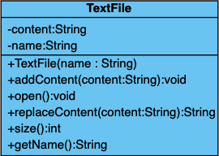

Langage JAVA
Les bases
Module INF330 - Programmation avancée
Gustavo BOBEFF
2021 - 2022
Qu'est-ce que c'est ?
La technologie Java définit à la fois un langage de programmation orienté objet et une plateforme informatique.
- est né en 1995 chez Sun Microsystems
- Version actuelle Java 8, actuellement Oracle
- est orienté objet
- est fortement typé
- Toute variable doit être déclarée avec un type
- Le compilateur vérifie que les utilisations des variables sont compatibles avec leur type (notamment via un soustypage correct)
- Les types sont d'une part fournis par le langage, mais également par la définition des classes
- est compilé
- En bytecode, i.e., code intermédiaire indépendant de la machine
- est interprété
- Le bytecode est interpété par une machine virtuelle Java
Comment ça marche?

Notions de base
- Class
- Héritage
- Interface
- Instanciation
- Polymorphisme
Classe
Une classe est une représentation abstraite d'un objet.
Pour java, tout est décrit en terme de classes et d'objet ... pas d'autre notion ...
Classe : structure
- champs (ou attribut) : l'ensemble des membres définissant l'état d'un objet
- méthodes : une action (fonction, procédure) qui manipule l’état d’un objet
- modificateurs d'accès des membres :
- public : l’accès est possible depuis toute classe du même package
- protected : l’accès est possible depuis toute classe du même package et toute classe fille
- private : l’accès n’est possible que dans la classe elle-même
- modificateurs des classes :
- public : permet à une classe d'être visible dans tout le code sans aucune restriction.
- package : permet à une classe d'être visible à l'intérieur de son package uniquement.
- abstract : est une classe template qui déclare des méthodes (peuvent être abstraites à leurs tours) ; elle permet ainsi à d'autres classes de s'en servir (en héritant de cette classe) pour définir un comportement spécialisé.
- final : empêche une classe d'être héritée, ce qui veut dire que son comportement ne peut être modifié.
- constructeur : Le constructeur est une méthode appelée lors de la création de l’objet (utilisation de new). Il porte le même nom que la classe et peut accepter des paramètres.
- nom de l'instance : Lorsque l’on est dans une méthode d’un objet le nom this est toujours un nom de cet objet.
Classe : Types de données
- Types primitifs
- Tableaux et matrices
- Chaînes de caractères
Il est possible de définir des tableaux d’objets ou de types primitifs. Le dimensionnement du tableau se fait lors de sa création par new et non lors de la déclaration de son nom.
int[] mon_tableau ;
int mon_tableau2[];
int[] mon_tableau = new int[20];
int[][] ma_matrice;
Les chaînes de caractères ne sont pas considérées en Java comme un type primitif ou comme un tableau. On utilise une classe particulière, nommée String
String s1 = ”hello” ;
String s2 = ”world” ;
String s3 = s1 + ” ” + s2 ;
String s4 = new String(); //pour une chaine vide
String s5 = new String(”hello world”);
Classe : exemple
|  |
|
Héritage
L’Héritage permet de définir de nouvelles classes à partir de classes existantes.
On utilise le mot clé extends pour indiquer qu'une classe hérite d'une autre.
|
|
- Si des méthodes de la classe TextFile (obtenue par héritage de DesktopItem) ont le même nom que certaines existant dans DesktopItem, elles viennent les cacher (surcharge).
- Pour appeler une méthode de DesktopItem dans TextFile il faut la préfixer par super.
- Une classe qui hérite d'une autre est une sous-classe et celle dont elle hérite est une super-classe.
- Une classe peut avoir plusieurs sous-classes.
- Une classe ne peut avoir qu'une seule classe mère : il n'y a pas d'héritage multiple en Java.
Héritage : Exemple de classe abstracte

|
|
|
Interface
- Une interface est une classe abstraite sans données qui ne peut servir qu’à être adjointe à d’autres classes.
- Pour définir une classe qui possède une interface on utilise le mot clé implements au lieu du mot clé extends
- Tous les objets qui se conforment à cette interface (qui implémentent cette interface) possèdent les méthodes et les constantes déclarées dans celle-ci.
- Plusieurs interfaces peuvent être implémentées dans une même classe.
|
|
Instanciation
- Lorsque un objet est créé (par utilisation de new), le constructeur est appelé et doit recevoir ses paramètres (s’il en a).
- Une application comporte une classe contenant une méthode main déclarée comme suit:
class AClasse {
public static void main(String[] args) {
System.out.println("Salut à tous!!!");
}
}
Polymorphisme
- Le polymorphisme est la faculté attribuée à un objet d’être une instance de plusieurs classes.
- A quoi sert le polymorphisme ? Si on définit une classe L qui est une liste d’objets de classe A, on pourra mettre dans cette liste des objets de n’importe quelle classe à partir du moment où elle est hérité de A.

|
|
... les bases ... encore
- Boucles
- Structures de contrôle
- Collections
- Exceptions
- ...
Boucles
- Permettent d’exécuter plusieurs fois un bloc d’instructions, et ce, jusqu’à ce qu’une condition donnée soit fausse. Les trois types d’instruction itératives sont les suivantes :
- For
- While
- Do While
//for (compteur; condition; modification du compteur) {
// liste d'instructions
//}
int i;
for (i=1; i < 6; i++) {
System.out.println(i);
}
//while (condition réalisée) {
// liste d'instructions
//}
int i=0;
while (i < 6) {
i++;
System.out.println(i);
}
//do {
// liste d'instructions
//}
//while (condition réalisée)
int i=0;
do
{
i++;
System.out.println(i);
}
while(i < 6);
Strucutures de contrôle
- Elles permetent d'exécuter une série d'instructions lorsqu'une condition est réalisée :
- if else
- Switch
//if (condition réalisée) {
// liste d'instructions si la condition est réalisée
// }
// else {
// liste d'instructions si la condition n'est pas réalisée
// }
if (a < b)
min=a;
else
min=b;
// Affectation conditionnelle (opérateur ternaire)
min = a < b ? a : b;
|
|
Collections
- Les collections en Java sont des classes permettant de manipuler les structures de données usuelles : listes, piles, files (ou queues).

Collections : exemples
|
|
Exceptions
- Java utilise des exceptions pour traiter les événements pouvant survenir lors de certaines opérations.
- Lorsque l’on utilise de telles opérations il est impératif de prendre en compte la récupération et le traitement des éventuelles exceptions.
- Capture et traitement d’une exception : Toute opération susceptible de lever une exception doit être placée dans un bloc try, le traitement de l’exception fait l’objet d’un bloc catch :
- Déclenchement d’une exception : une méthode qui doit lever une exception doit être définie comme suit :
try {
// Bloc d'instructions pouvant déclencher une erreur
} catch ( Exception exception ) {
// Bloc d'instructions pour traiter une éventuelle exception
} finally {
// Bloc d'instructions à exécuter dans tous les cas,
// que le try se soit exécuté en succès ou en erreur.
}
typeDeRetour nomDeMethode (liste de paramètres) throws ClasseException
{ // dans le corps de cette méthode on trouvera :
throw(nomException); // nomException est de classe ClasseException
}
Exceptions : Exemples
|
|
|
|
notions ... pas de trop de base ...
- Generics (java 5)
- Expressions lambda (java 8)
- Stream (java 8)
Generics (java 5)
- Les méthodes et classes génériques Java permettent aux programmeurs de spécifier, avec une seule déclaration de méthode ou avec une seule déclaration de classe, un ensemble de types associés.
- Les génériques offrent également une type safety au moment de la compilation qui permet aux programmeurs de détecter les types non valides.
// Définition
public class ArrayList<T> {
public T get() { ... }
public void add(T t) { ... }
}
// Instanciation
ArrayList<String> listOfString = new ArrayList<String>();
// Utilisation
listOfString.add("foo");
Generics : Exemples
|
|
Expressions lambda (java 8)
- Une expression lambda est une fonction qui sera créée, c’est-à-dire déclarée et définie, à l’endroit même où elle doit être utilisée.
- Aucun besoin pour définir une expression lambda en Java de créer une classe, comme on doit le faire lorsqu’une méthode est nécessaire.
- C’est donc bien la première fois qu’en Java, une fonction peut être amenée sans lui créer une classe.
- La syntaxe d'une expression lambda est composée de trois parties :
- un ensemble de paramètres, d'aucun à plusieurs
- l'opérateur ->
- le corps de la fonction
(paramètres) -> expression;
(paramètres) -> { traitements; }
Expressions lambda : exemples
// Comme paramètre d'une fonction
public class Main {
public static void main(String[] args) {
ArrayList<Integer> numbers =
new ArrayList<Integer>();
numbers.add(5); numbers.add(9); numbers.add(8); numbers.add(1);
numbers.forEach( (n) -> { System.out.println(n); });
}
}
// Output :
5
9
8
1
// Utilisation de Consomer pour stocker l'expression dans une variable
import java.util.ArrayList;
import java.util.function.Consumer;
public class Main {
public static void main(String[] args) {
ArrayList<Integer> numbers = new ArrayList<Integer>();
numbers.add(5); numbers.add(9); numbers.add(8); numbers.add(1);
Consumer<Integer> method = (n) -> { System.out.println("Nb : " +n); };
numbers.forEach( method );
}
}
// Output :
Nb : 5
Nb : 9
Nb : 8
Nb : 1
// Interface fonctionnelle
interface StringFunction {
String run(String str);
}
public class Main {
public static void main(String[] args) {
StringFunction exclaim = (s) -> s + "!";
StringFunction ask = (s) -> s + "?";
printFormatted("Hello", exclaim);
printFormatted("Hello", ask);
}
public static void printFormatted(String str, StringFunction format) {
String result = format.run(str);
System.out.println(result);
}
}
Streams (java 8)
- Permettent d’effectuer des traitements sur des collections d’une manière simple et performante.
- Ils sont souvent utilisés avec les expression lamnda.
- Un stream prend une collection, un tableau ou des E/S.
- ils ne modifient pas la structure de données d’origine.
- Chaque opération intermédiaire est exécutée et renvoie un stream en conséquence, de sorte que diverses opérations intermédiaires peuvent être enchaînées. Les opérations terminales marquent la fin du flux(stream) et renvoient le résultat.
import java.util.*;
public class StreamExemple
{
public static void main(String[] args)
{
List<Integer> list = Arrays.asList(1, 2, 3, 4, 5);
list.stream().map(x -> x + 1).forEach(System.out::println);
}
}
Stream : exemples
// Filter
import java.util.Arrays;
import java.util.List;
import java.util.stream.Collectors;
public class FilterPlanets {
public static void main(String[] args) {
List<String> lines = Arrays.asList("Jupiter", "Terre", "Mars");
List<String> result = lines.stream()
.filter(line -> !"Terre".equals(line))
.collect(Collectors.toList());
result.forEach(System.out::println);
}
}
// FindAny
import java.util.Arrays;
import java.util.List;
public class FilterAndFindAny {
public static void main(String[] args) {
List<Integer> list = Arrays.asList(1, 2, 3, 4, 5);
Integer result = list
.stream()
.filter(num -> num < 4).findAny(.orElse(null));
}
}